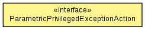

WildFly Elytron 1.0.0.Beta1-SNAPSHOT
- Summary:
- Nested |
- Field |
- Constr |
- Method
- Detail:
- Field |
- Constr |
- Method

-
- Type Parameters:
T - the action result typeP - the action parameter type
public interface ParametricPrivilegedExceptionAction<T,P>
A privileged action which accepts a parameter and can throw an exception.
- Author:
- David M. Lloyd
-
-
Method Summary
Methods
| Modifier and Type |
Method and Description |
T |
run(P parameter)
Perform the action.
|
WildFly Elytron 1.0.0.Beta1-SNAPSHOT
- Summary:
- Nested |
- Field |
- Constr |
- Method
- Detail:
- Field |
- Constr |
- Method
Copyright © 2014 JBoss by Red Hat. All rights reserved.